Artes Marciales & Salud Integral
Shaolin Kung Fu, Chen Taijiquan, Qi Gong y Medicina Tradicional China. Clases al aire libre en el Parque Los Andes, Chacarita.
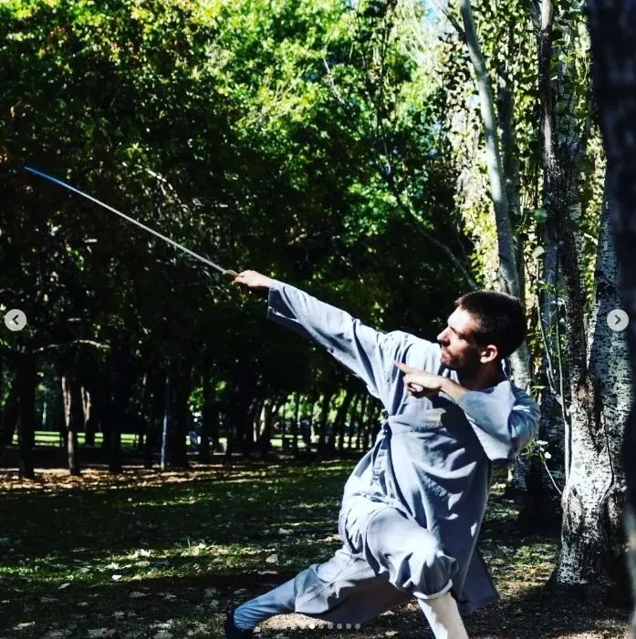
Shaolin Kung Fu
Fundamentos (Jiben Gong: Ma Bu, Gong Bu, Xu Bu), formas tradicionales (Taolu), sistema de los Cinco Animales de Jue Yuan, armas monacales (bastón Gun, sable Dao) y combate tradicional Sanda.
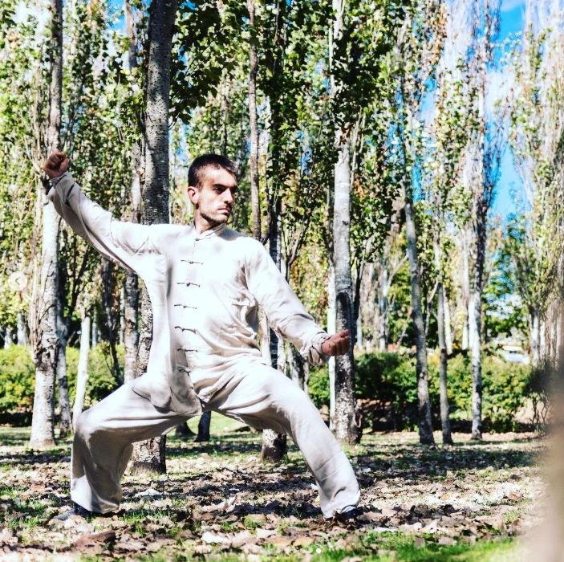
Chen Taijiquan
La raíz viva de Chenjiagou. Fuerza y suavidad en armonía (Gang Rou Xiang Ji), devanado de seda (Chan Si Gong), formas Laojia Yi Lu, trabajo de Dantian y enraizamiento postural profundo.
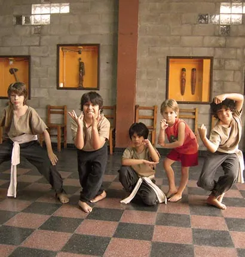
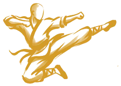
Kung Fu Infantil
Clases formativas para niños a partir de los 6 años. Desarrollo psicomotriz, disciplina marcial, respeto mutuo, concentración y autoconfianza a través del juego pedagógico tradicional.
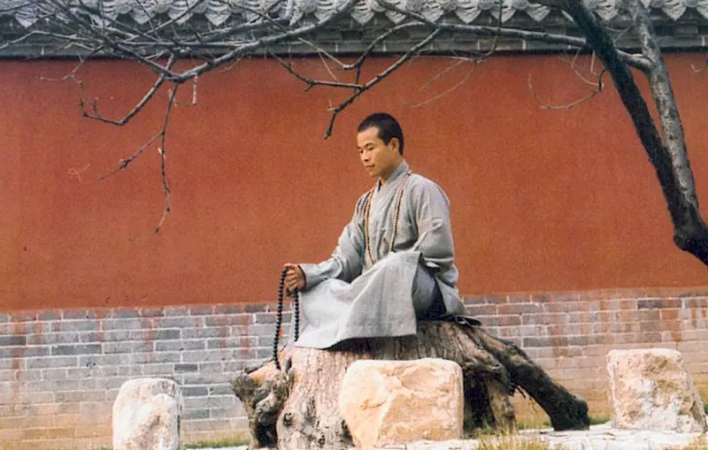
Meditación Chan
La raíz contemplativa del templo Shaolin (Zuochan 坐禅). Práctica de atención plena, postura sentada en quietud, respiración diafragmática profunda y desapego de la agitación mental urbana.
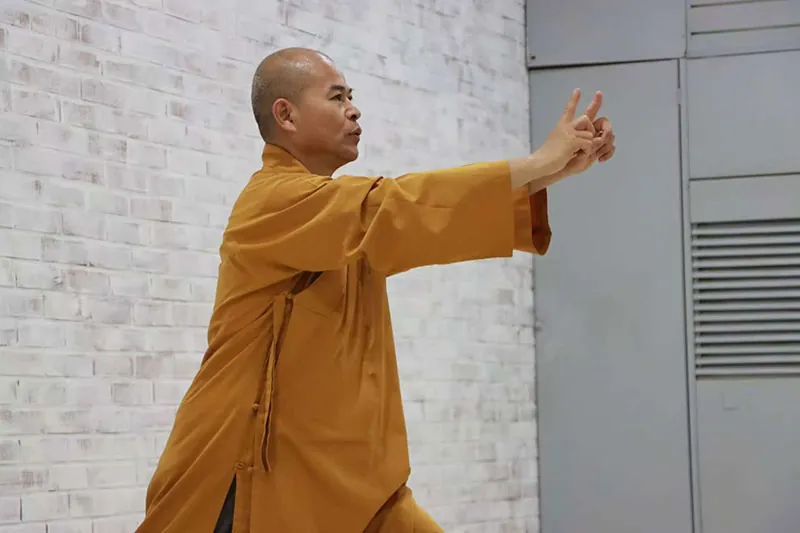
Qi Gong (Chi Kung)
Tratados energéticos de Bodhidharma (Ba Duan Jin, Yi Jin Jing, Shi Ba Luo Han Gong). Movimientos fluidos y respiración para desbloquear meridianos, nutrir el Qi y fortalecer órganos vitales.
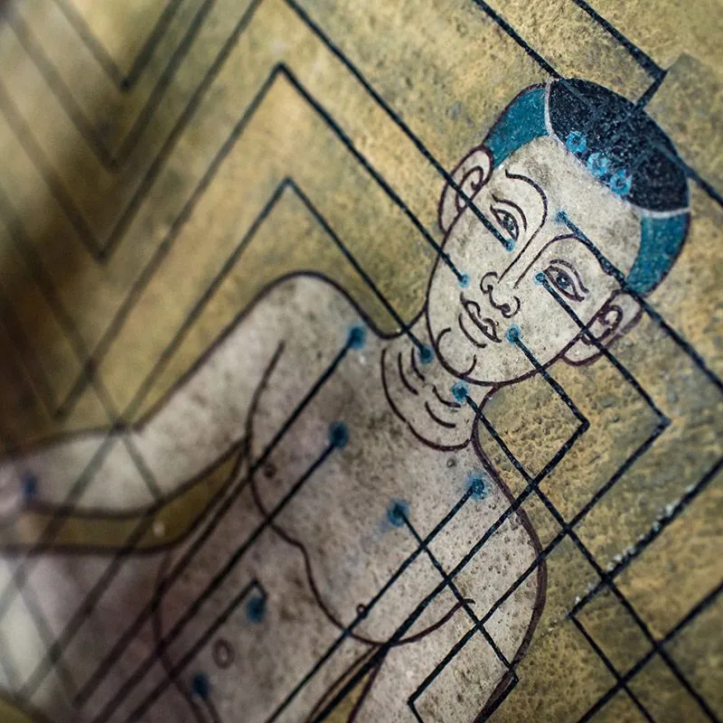
Medicina China (MTC)
Gabinete terapéutico conducido por Pablo Encinas. Acupuntura clínica, moxibustión, ventosas Ba Guan, masaje terapéutico Tuina y fitoterapia para el restablecimiento del equilibrio integral.
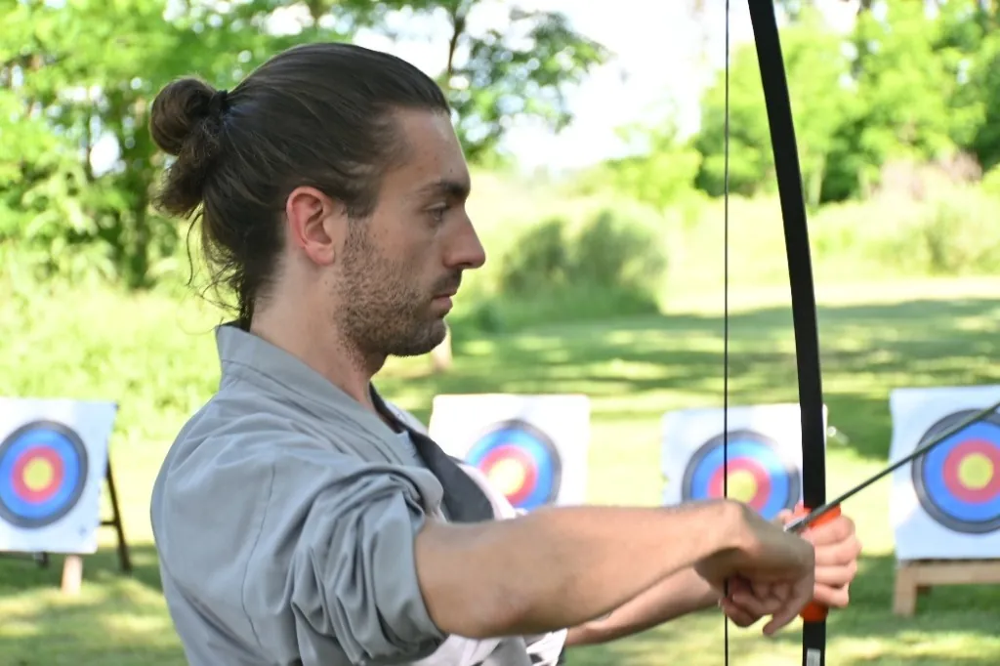
Arquería Zen (Chan Gong)
La unión del tiro con arco tradicional y el cultivo Chan (禅弓). Disciplina de calma interior, respiración consciente, postura de arraigo y concentración total en el instante previo al disparo.
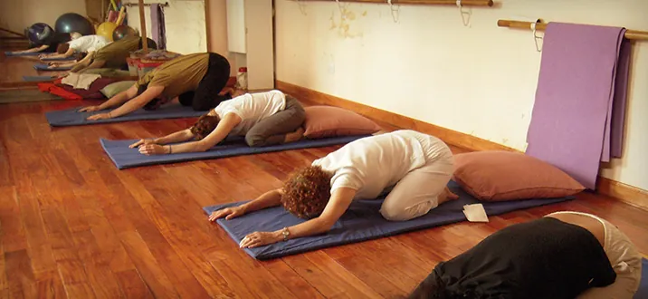
Yoga Integral
Integración armónica de asanas, respiración consciente (Pranayama) y meditación. Trabajo postural suave y profundo enfocado en la flexibilidad articular, el equilibrio bioenergético y la serenidad.
Reiki Usui Ryoho
Sistema tradicional de armonización bioenergética y canalización de la energía vital (Reiki 靈氣). Sesiones e iniciaciones a cargo de Mstra. Yamila Melillo en Sede Central.
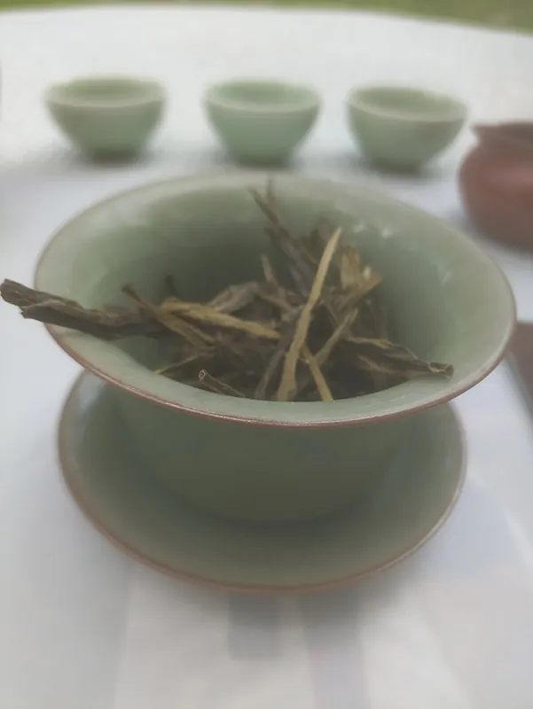
Cultura del Té (Cha Dao)
El cultivo de la serenidad y la presencia a través del arte milenario del té (Cha Dao 禅茶一味). Actividades, degustaciones y ceremonias Gongfu Cha dictadas en Sede Central.
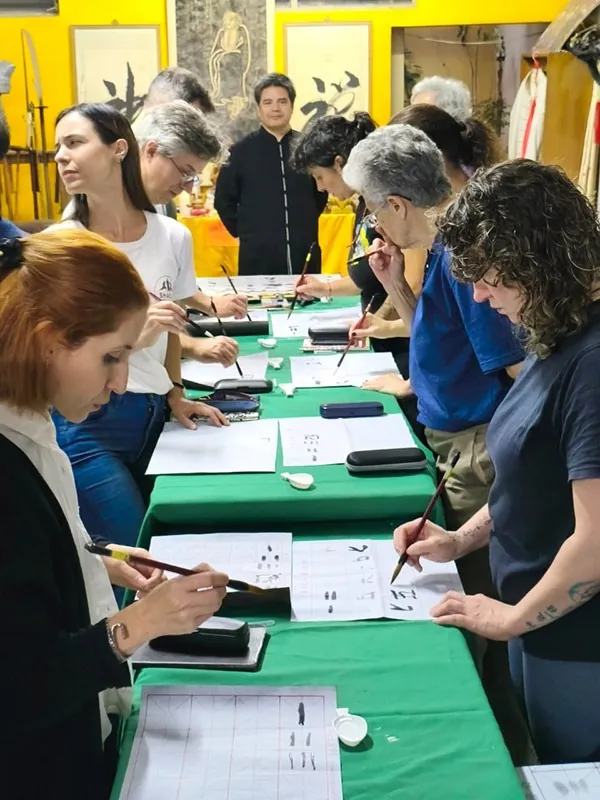
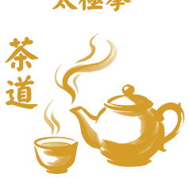
Caligrafía China (Shū Fǎ)
El arte supremo del trazo vivo (書法 – Shū Fǎ) donde confluyen respiración, intención y presencia. Clases, talleres y seminarios dictados en Espacio Yang Tai.
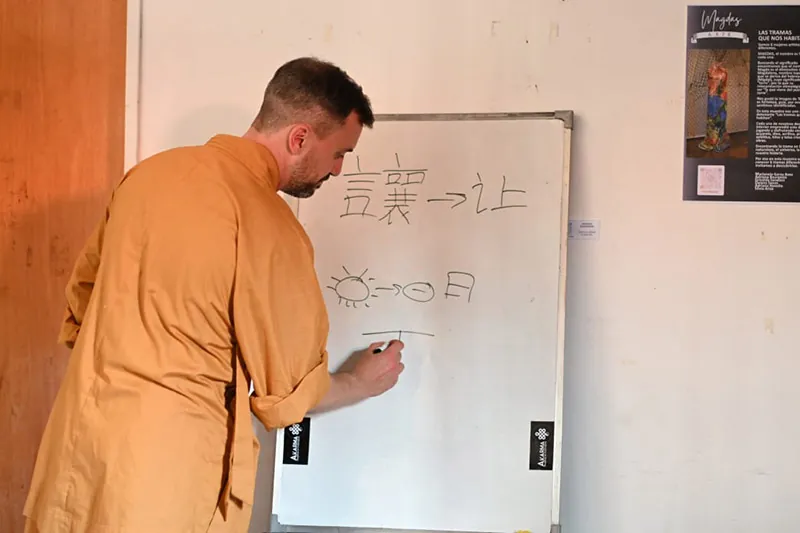
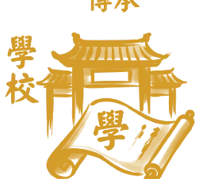
Idioma Chino (Mandarín)
Espacio formativo lingüístico (Hanyu 汉语) dictado en Sede Akarma (Caballito) por el Prof. Miguel López Márquez. Vocabulario marcial clásico, fonética Pinyin y cosmovisión oriental.
Sede Pechan (Clases)
Práctica y entrenamiento al aire libre en el Mástil del Parque Los Andes (Chacarita, CABA). Clases matutinas y vespertinas de Kung Fu tradicional, Taijiquan y Qi Gong en contacto directo con la naturaleza.
Linaje & Sedes
Transmisión ancestral directa de los templos de Songshan y Chenjiagou. Filial oficial de la Escuela Shaolin Quan Fa Guan Argentina bajo la guía de los Grandes Maestros Shi De Yang y Daniel Vera.
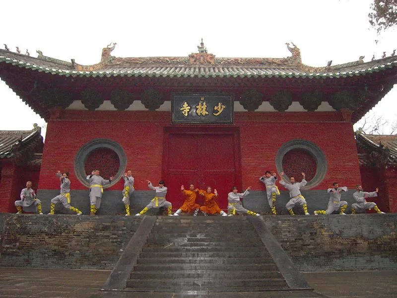
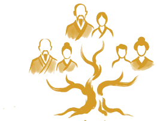
Viajes a China
Peregrinaciones y entrenamientos intensivos en los monasterios matrices del monte Songshan y la aldea de Chenjiagou. Intercambio cultural, práctica con monjes maestros y vivencia directa en China.
Sedes Oficiales de la Escuela Shaolin Argentina
Espacios homologados y sedes autorizadas para la práctica y el cultivo de las artes tradicionales bajo la tutela de la sede central.
Shaolin Argentina
Almagro, CABA
Sede central matriz conducida por Shifu Daniel Vera y Shimu Yamila Melillo.
Akarma
Caballito, CABA
Centro integral de movimiento: Shaolin Kung Fu, Tai Chi Chen, Yoga y salud integrativa.
Espacio Yang Tai
CABA
Puente de culturas: Kung Fu tradicional de Shaolin, Tai Chi, Yoga y Caligrafía China.
Patio Sur
Valentín Alsina
Shaolin Kung Fu (adultos y niños), Chen Taijiquan, Qi Gong y Meditación Chan.